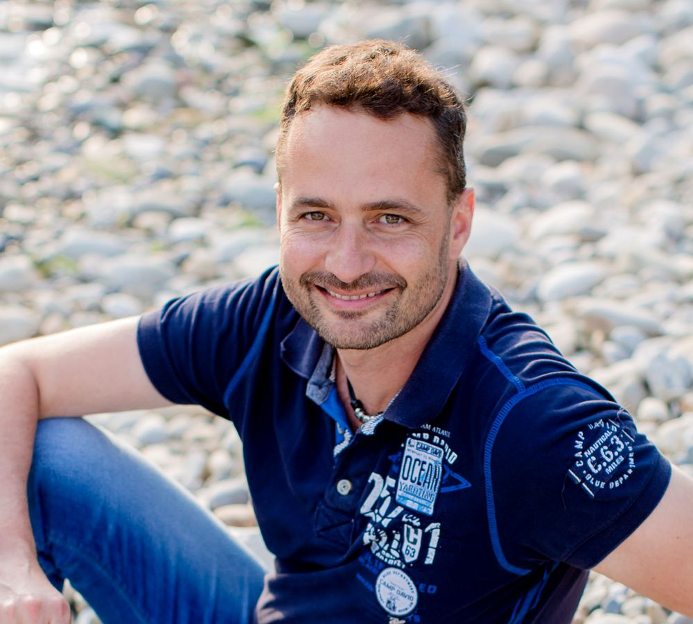

PO-2026 · Verfügbar ab sofort
Hi, ich bin Dirk.
Ich bringe Produkte —
und Teams — ins Ziel.
Product Owner & Agile Leader aus Zürich. Seit über zwei Jahrzehnten übersetze ich Nutzerbedürfnisse, Stakeholder-Interessen und technische Machbarkeit in Lösungen, die tatsächlich ausgeliefert werden — zuletzt fast 19 Jahre bei Swisscom.
PO-01 · Über mich
Struktur im Chaos, Ruhe im Sprint.
Ich verbinde ein solides technisches Fundament — Netzwerktechnik, Softwareentwicklung, Cloud — mit strategischem Blick auf Produkt, Prozess und Menschen. Meine Basis: 19 Jahre Swisscom, davon zuletzt als Product Owner, DevOps-Teamleiter und Scrum Master. Dazwischen Stationen bei Credit Suisse und COLT Telecom sowie ein Master-Jahr in Sydney.
Fachlich bin ich stark in der Digitalisierung von Prozessen, im agilen Arbeiten (SAFe, Scrum, Kanban) und in der funktionsübergreifenden Zusammenarbeit mit Stakeholdern, IT und externen Partnern. Am meisten Energie gibt mir, Nutzerbedürfnisse in nachhaltige, intelligente Lösungen zu verwandeln — und Teams dabei so zu coachen, dass sie das auch ohne mich weiterhin können.
- Faktenorientiert & analytisch
- Qualitätsbewusst bis ins Detail
- Teamplayer — ohne Ego
- Ruhig & besonnen, auch unter Druck
- Offen für Feedback, hört zu
- Verlässlich bis zum letzten Sprint
PO-02 · Sprint Log
Mein beruflicher Werdegang, als Changelog.
25 Jahre IT und Telekommunikation, verdichtet auf neun Releases — vom Diplom-Ingenieur bis zum Scrum Master & Leadership Delegate.
-
v9.0 2026 — heute
Nächstes Release: Ihr Unternehmen?
Nach dem stellenbedingten Aus meiner Position infolge einer Reorganisation bei Swisscom suche ich die nächste Herausforderung — als Product Owner, Agile Coach oder Teamlead. Backlog ist leer, Kapazität ist frei.
-
v8.0 06/2023 — 04/2026
Scrum Master & Leadership Delegate, Swisscom
Betreuung von zwei agilen Teams (24 Ingenieur:innen), Coaching und Facilitation sämtlicher Scrum-Events, aktive Mitgestaltung der SAFe-ART-Reorganisation, Schulungen für agile Methoden im gesamten Bereich.
-
v7.0 04/2018 — 05/2023
Product Owner & Teamleiter DevOps, Swisscom
Aufbau eines interdisziplinären DevOps-Teams, Steuerung von Softwareentwicklungs- projekten im Network-Operations-Umfeld, Beratung zu RPA und KI-getriebener Prozessautomatisierung, Vorsitz im Product-Owner-Sync-Meeting.
-
v6.0 12/2013 — 03/2018
Demand & Portfolio Manager, Swisscom
Aufbau und Betrieb einer Forecasting-Management-Plattform, BI-Auswertungen für Nachfrage- und Kapazitätsplanung, Beratungsprojekte zur Cloud-Einführung (IaaS, PaaS, SaaS).
-
v5.0 2007 — 2013
Solution Designer & Demand Manager, Swisscom
Von der technischen Lösungsarchitektur (LAN, WAN, VoIP) über kundenspezifische Ausschreibungen bis zum Aufbau des unternehmensweiten Demand-Managements — verschiedene Stationen, ein roter Faden: Struktur schaffen.
-
v4.0 2005 — 2007
Teamleader IT Solution Engineering, Credit Suisse
Fachliche und personelle Führung eines zehnköpfigen Engineering-Teams an drei Standorten, Budgetverantwortung für Life-Cycle-Projekte, Beförderung ins Middle Management als Assistant Vice President.
-
v3.0 2002 — 2004
Master of Engineering Management, UTS Sydney
Ein Jahr Down Under: General Management, Leadership und Englisch auf Verhandlungsniveau — der Blick über den technischen Tellerrand hinaus.
-
v2.0 1999 — 2002
IP Engineer, COLT Telecom & Atos Origin
Backbone-Design, BGP4, Firewalls, VPNs — das Handwerk der Internet-Infrastruktur, gelernt in produktiven Kundenumgebungen.
-
v1.0 1992 — 1997
Ausbildung, Fraunhofer-Institut & Berufsakademie Lörrach
Dipl.-Ing. Technische Informatik. Erste Projekte in Netzwerktechnik und Datenbanksystemen — der Anfang von allem.
PO-03 · Backlog
Kernkompetenzen
Agile & Frameworks
Produkt & Führung
Digital & Data
Tools
Sprachen
PO-04 · Definition of Done
Ausbildung & Zertifikate
- ✓Certified SAFe® 6 Scrum Master
- ✓Certified SAFe® Product Owner / Product Manager
- ✓Lean Master
- ✓Master of Engineering Management
- ✓Dipl.-Ing. Technische Informatik
- ✓Data Science Hands-On Workshop
- ✓Coaching Skills for Leaders & Managers
- ✓CCNA & CCDA
- ✓Executive Course „Information Management & Decision Support“
PO-05 · Sprint Review
Was andere über die Zusammenarbeit sagen
Auszüge aus Arbeits- und Zwischenzeugnissen der letzten 25 Jahre. Vollständige Dokumente gerne auf Anfrage.
„Er erfüllte jederzeit die Anforderungen und mit seinen Leistungen waren wir sehr zufrieden. […] An veränderte Situationen konnte er sich leicht anpassen und reagierte auch in belastenden oder schwierigen Gegebenheiten mit Gelassenheit und Umsicht.“
„Wir kennen Dirk Schweizer als flexiblen und belastbaren Mitarbeiter. Aufkommende Herausforderungen erkennt er frühzeitig und liefert einen wesentlichen Beitrag zu deren Lösung.“
„Wir erleben Dirk Schweizer als äusserst selbstständigen, zuverlässigen und vorbildlichen Mitarbeiter, der sein Pensum jederzeit sehr effizient, gewissenhaft und exakt erfüllt.“
„Er verfügte über organisatorische wie auch planerische Fähigkeiten, wodurch er auch in komplexen Situationen den Überblick behielt. […] Als Führungspersönlichkeit überzeugte er durch sein natürliches Durchsetzungsvermögen.“
„Wir haben Herrn Schweizer als vertrauenswürdigen, engagierten und zuverlässigen Mitarbeiter kennengelernt. […] löste er die vielseitigen Aufgaben stets kompetent, termingerecht und erbrachte jederzeit eine sehr gute Leistung.“
PO-06 · Off Sprint
Persönliches
Wenn das Backlog leer und der Sprint vorbei ist, zieht es mich ans Wasser — ob Zürichsee oder Mittelmeer, am liebsten mit Weitblick und einer Prise Salzluft. Den kühlen Kopf aus dem Job bringe ich gleich mit.

PO-07 · Sprint Planning
Sprint Planning für uns beide?
Ich freue mich auf ein erstes Gespräch — als Product Owner, Scrum Master oder Agile Lead. Schreiben Sie mir, ich melde mich innert eines Sprints zurück.
Vollständige Referenzen und Arbeitszeugnisse (Swisscom, Credit Suisse, COLT Telecom u. a.) sende ich gerne auf Anfrage zu.